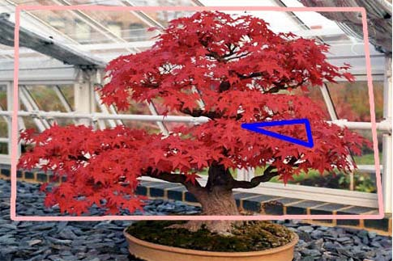
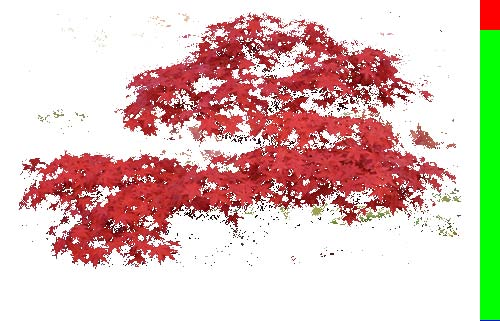
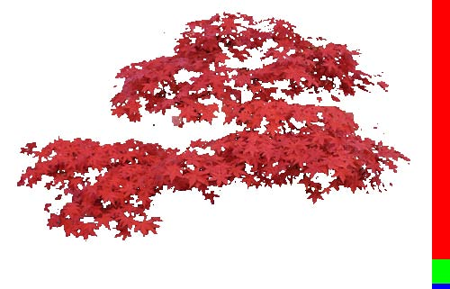
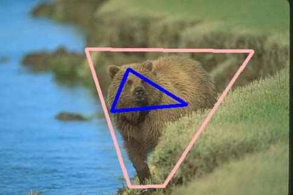
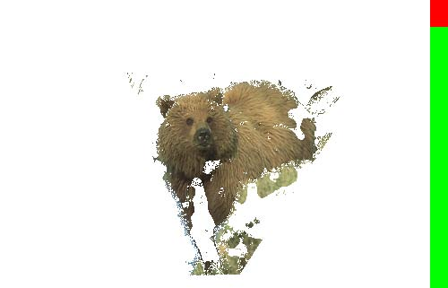
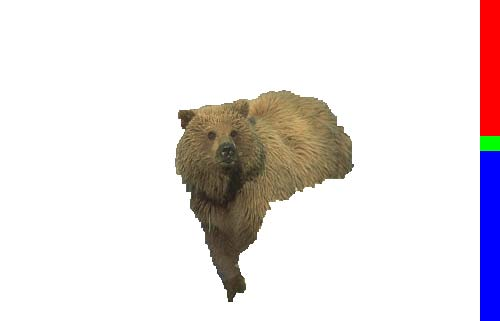

Projects Summary
| Index | Name |
|---|---|
| 1 | Learning image-specific parameters for interactive segmentation |
| 2 | Relatively-Paired Space Analysis |
Learning image-specific parameters for interactive segmentation
we present a novel interactive image segmentation technique that automatically learns segmentation parameters specifically tailored for each and every image. Unlike existing work, our method does not require any offline parameter tuning or training stage, and is capable of determining image specific parameters according to simple user interaction with the target image. We formulate the segmentation problem as an inference of a conditional random field (CRF) over a segmentation mask and the target image, and parametrize this CRF by different weights (e.g., color, texture and smoothing). The weight parameters is learned via an energy margin maximization, which is dealt with through a constraint approximation scheme and the cutting plane method. Experimental results show that our method, by learning image-specific parameters automatically, outperforms other state-of-the-art interactive image segmentation techniques.
Features
- Parameters is image-specific
- Understand users' intention
- Learn parameters from user interactions without a training dataset
Experimental Results
| |
|
|
|  |  |  |
|  |  |  |
Demonstration
Relatively-Paired Space Analysis
Discovering a latent common space between different modalities plays an important role in cross-modality pattern recognition. Existing techniques often require absolutely-paired observations as training data, and are incapable of capturing more general semantic relationships between cross-modality observations. This greatly limits their applications. In this paper, we propose a general framework for learning a latent common space from relatively-paired observations (i.e., two observations from different modalities are more-likely-paired than another two). Relative-pairing information is encoded using relative proximities of observations in the latent common space. By building a discriminative model and maximizing a distance margin, a projection function that maps observations into the latent common space is learned for each modality. Cross-modality pattern recognition can then be carried out in the latent common space. To evaluate its performance, the proposed framework has been applied to cross-pose face recognition and feature fusion. Experimental results demonstrate that the proposed framework outperforms other state-of-the-art approaches.